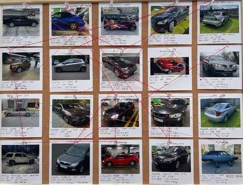
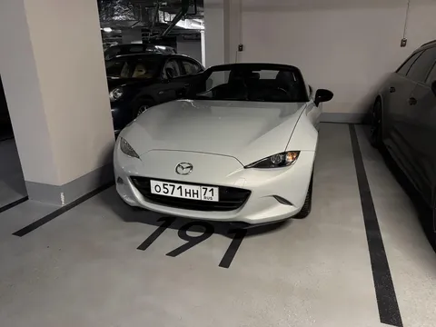
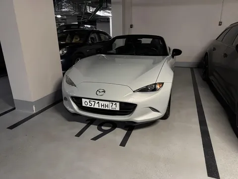

Автопуть Меня все же попросили рассказать, каков был мой путь в автомобилях. Что ж, погнали!
- Первой у меня была Nissan
Almera 2004. Полторашка, механика - для первой самое то. Очень приятная машинка в своем сегменте.
- Потом захотелось чего-то нового, прям из салона. Так появилась Skoda
Octavia 2012 1.8. Хороший агрегат, по сей день служит моему другу.
- А я пересел на новую Audi
Q5 2014 дизель, потому что потянуло на премиум. Это идеальный автомобиль, на ней моя жена ездила аж до 2023.
- Жена училась водить, купил ей Mazda
2 2009 1.3 MT. Пока доучивалась, я катался сам. Веселая малышка, даже на MRW погоняла.
- Мне ауди наскучила, отдал ее жене, сам пересел на BMW
325 2006 на N52B25. Поселился в автосервисе, подружился с эвакуаторщиком.
- Надоело жить на сервисе, поменял на Toyota
Camry 2006 3.5. Очень надежно и очень комфортно. Но очень скучно. Слишком скучно.
- Чтобы было весело, взял Subaru Impreza
WRX 2001. Как положено, синюю, на золотистых дисках. Высокая лавка, подсветка днища. Разбил(
- После субарика снова захотелось в комфорт. И теперь - по-серьезному. Mercedes
S-klasse 2001 - вышка. Ломался, но сначала довозил.
- Допом к мерсу взял турбовый Mitsubishi
Eclipse 1999, как в форсаже и NFS. Угарнул по автозвуку. Но автомат все портил.
- Во время пандемии продал мерс и эклипс, а потом познал америку - Cadillac
Escalade 2010. Но он меня трижды подвел, за что был продан.
- Познаем мир дальше - Infiniti
FX37s 2010 в красивом бронзовом цвете. Стильно, быстро, но управляемость и колейность - мама дорогая!
- Увлекся дрифтом, взял Lexus IS 1999 (aka toyota
altezza) и оторвался по полной - свап на 4л UZ и мкпп, полный обвес как у Дамира - лють!
- Комфорта не хватало, докупил Lexus
LS460L 2008. Оказывается, мерс S-класса не такой уж крутой) LS просто восхитителен. И надежен.
- Потянуло на янгтаймеры, докупил Mercedes
W124 1995 купе в отличном сохране. Чистый кайф и уважение на районе гарантированы.
- В 2022 делал ремонт, денег не хватило, пришлось продать Теззу, LS и 124(( Пересел на ВАЗ
2109. Лучше, чем на метро. Больше плюсов нет.
- Доделал ремонт, купил Toyota
Cresta 1989. У самурая нет цели, есть только дырявый выхлоп и просевшие пружины. Но JDM в сердечке.
- JDM intencifies - взял кей-кар Honda
N-box 2017. Угарная вещица, всем рекомендую. Но по трассе больше 110 ехать не хочет - мотор-то 0.6л.
- Чтобы ездить на дачу, докупил Toyota
Celica 2000. Типично дачная тачка, да? Зато веселая, 200 сил на механике, едет бодро! А потом...
- Жене разбили ауди, пришлось продать селику, чтобы купить Mercedes
A-klasse 2018. Сам тоже немало на ней катался. Но жене не зашла.
- И тут вылетает объява - Chrysler
New-Yorker 1989. Бордовый, на бордовом велюре, слепые фары. Как не взять? Но нюансов у ровесницы - ой.
- Возвращаемся к премиуму - Porsche
Panamera 4S 2012. Меньше, чем за 3 мульта, ты получаешь и скорость, и роскошь - очень нравится.
- Но подростковые гештальты сами себя не закроют. Mercedes
G500 2003. Разумеется, переодетый под 63рест. Тачка ужасна, но это феномен.
- О, кабрика же еще не было. Mazda
MX-5 2019. Про нее уже писал выше, в посте про
покатушки на трек-дне MRW. Она прекрасна.
Продолжение следует...
Здесь я супер-коротко что-то обозначил про каждую машину, но если вы хотите про какую-то из них подробнее - пишите в комменты)
А чуть подробней про некоторые, про свое отношение к авто, и почему у мужчины в моменте должно быть 3 тачки, я рассказывал в
подкасте.

 
